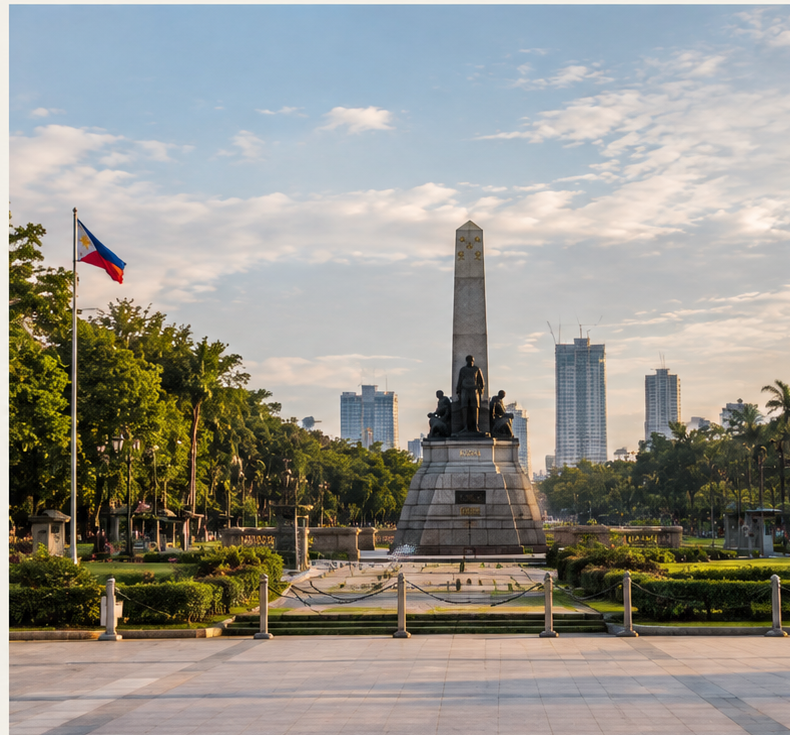

S&T ISSUES AND TRENDS ONLINE GALLERY
Technology and the Future of the Philippines
An evidence based digital exhibition about eight major science and technology issues affecting Filipino communities, industries, education, health, environment, security, and everyday life.
Research focus: Philippine evidence published or released from 2024–2026.

Eight issues.
One changing country.
THE EXHIBITION
Science and technology in a changing Philippines.
The Philippines is dealing with rapid digitalization, climate risks, pressure on food and energy systems, cybersecurity concerns, electronic waste, and unequal access to technology. Recent government and development reports show that these are not abstract issues: they affect households, farms, schools, businesses, local governments, and disaster response.
This gallery focuses on the Philippine context and uses sources dated from 2024 through 2026. Open each exhibit to see the problem, current Philippine evidence, possible technology responses, and source links.
EXPLORE THE EXHIBITION
Eight perspectives on the Philippines
No exhibit matches your search.

THE PHILIPPINE QUESTION
How can technology respond to problems people actually face?
A technology becomes more meaningful when it responds to a real need: safer communities during extreme weather, better access to information, stronger food systems, cleaner energy, safer digital services, or more responsible management of discarded devices.
The gallery therefore looks at both opportunities and limitations. Technology alone does not solve every problem; infrastructure, skills, financing, governance, research, and community participation also matter.
ABOUT THIS GALLERY
Eight issues. One Philippine perspective.
This online gallery was created for the S&T Issues and Trends activity. It presents Artificial Intelligence, Climate Technology, Biotechnology, Renewable Energy, Cybersecurity, Space Science, E-Waste, and Digital Inequality through recent Philippine evidence.
CRITICAL THINKING
Questions for the future
Which Philippine problems can science and technology address most directly?
Who benefits from a new technology, and who may still be left behind?
What infrastructure, skills, funding, or policies are needed before a solution can work?
How can innovation be developed while protecting people, communities, and the environment?
STUDENT REFLECTION
Technology is connected to real life.
After exploring the eight topics, I realized that science and technology are closely connected to problems that Filipinos experience every day. Climate hazards can affect homes, farms, roads, water, and electricity. Digital technology can create opportunities for learning and work, but access and digital skills are still unequal.
I also learned that technology needs to be used responsibly. Artificial intelligence, biotechnology, satellites, renewable energy, and digital services can support development, but they also require research, regulation, infrastructure, funding, and people who know how to use them properly. The Philippine context matters because a solution must respond to local needs and conditions.
SOURCES & REFERENCES
Research from 2024–2026
The exhibit uses recent sources from Philippine government agencies and major development institutions. Each exhibit also has its own source list.